人工智能学习笔记三——卷积神经网络
卷积神经网络（Convolutional Neural Networks, CNN）是一类包含卷积计算且具有深度结构的前馈神经网络，是深度学习的代表算法之一。卷积神经网络具有表征学习能力，能够按其阶层结构对输入信息进行平移不变分类，因此也被称为“平移不变人工神经网络”。
在正式介绍之前，默认已经了解了神经网络的相关知识。
下面我们演示一下怎么对一个图像做卷积：
首先，我们要搞清楚一张照片是如何输入到神经网络中的。众所周知，计算机适合处理的是矩阵运算，所以必须要把图片转换成矩阵后计算机才能认识。所有的彩色图像都由红绿蓝（RGB）叠加而成，成为图像的三个通道，一张图片在计算机中存储也是通过这三个矩阵完成的。
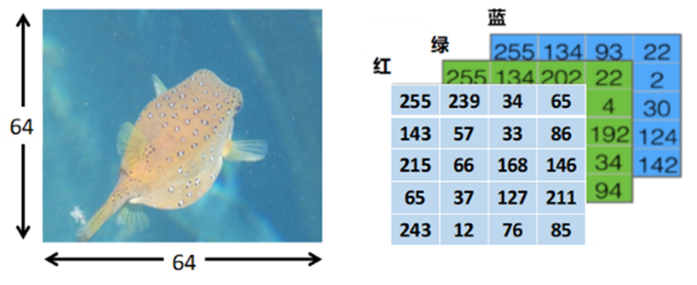
图1 图像的RGB图
如图1所示，一张64*64个像素大小的图片（例如白色可以表示成RGB（255,255,255），可以用3个64*64大小的矩阵来代表这个图。这边为了演示，只画了三个5 * 4的矩阵来代表64*64的全尺寸矩阵。RGB这三个矩阵称为为图像的3个通道，也作为神经网络的输入数据。
接着来明确几个基本的概念：卷积核（convolution kernel）、深度（depth）、步长（stride）和补零（zero-padding）。
卷积核（convolution kernel）：卷积核是一个矩阵，可以根据需求设置大小，常见大小为，和。卷积核的参数一开始是随机赋值，之后通过反向传播进行更新。就相当于标准神经网络模型的权重参数。
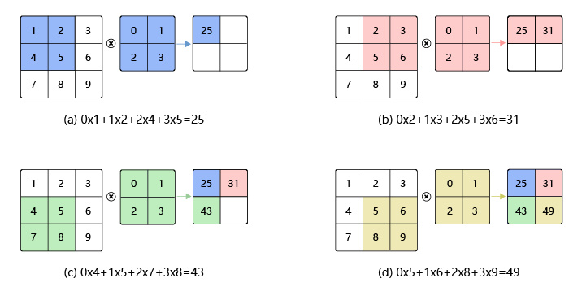
图2 卷积核运算示意图
图2是网上的通用图像卷积解释图了，将两个图像对应的位置的两个数字相乘并累加在一起。然后随着卷积核的滑动，我们就计算出了一个新的图像，这就是图像卷积操作。为了保证模型的深度，通常在卷积操作结束后还会加上偏置项b，b的值一开始是随机的，后续通过反向传播更新。最后将得到的每一个值经过激活函数处理，和神经网络相同。
深度（depth）：深度指的是图的深度。灰度图只需要一个矩阵就能表示，深度为1。RGB图需要三个矩阵表示，深度为3。在卷积运算中，为了保证网络的学习深度，通常会对同一个矩阵进行多次卷积操作，进行的次数就是图像的深度。如图3所示，图中就将一个矩阵进行了五次卷积操作，得到了五个特征图。通常用表示卷积核的尺寸，F表示卷积核大小，D表示有多少个不同的卷积核，图3中D的值就为5。
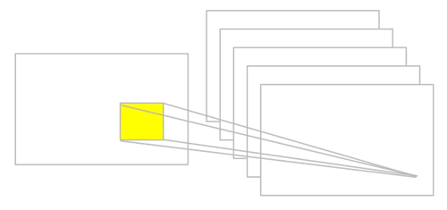
图3 卷积深度示意图
步长(stride)：用来描述卷积核移动的步长。通常来说，卷积核的步长为1，也就是卷积核每次都滑动一个像素单位，如图4所示。
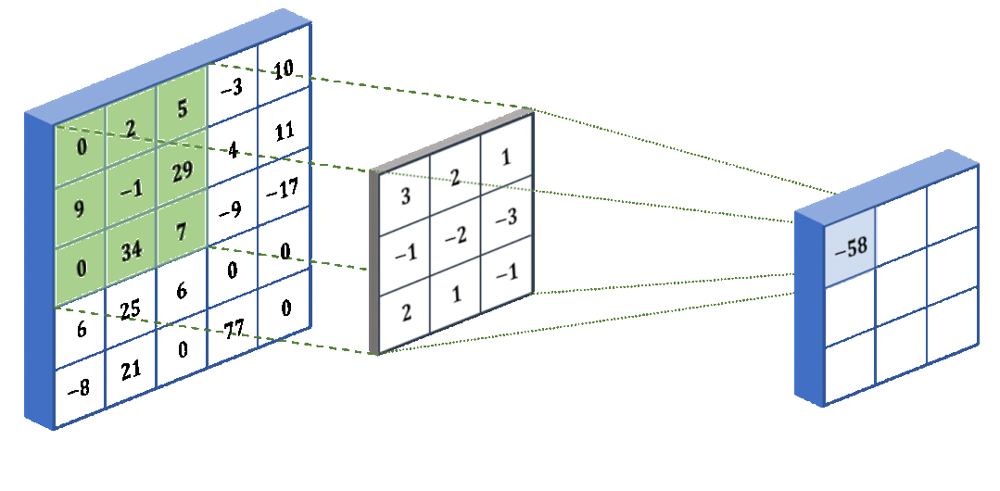
图4 卷积核滑动示意图
当然，步长也可以设置为其它的数值，如图5所示。
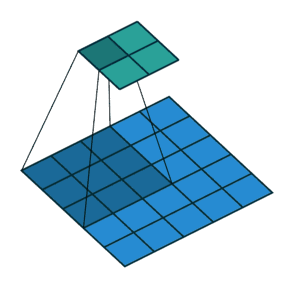
图5 步长为2的滑动示意图
补零（zero-padding）：通过对图片边缘补零来填充图片边缘，从而控制输出单元的空间大小。之所以在图像边缘补零，是因为图像边缘被卷积的次数小于图像中心的卷积次数，但有时，图像边缘往往也含有重要的特征信息，因而通过补零，让图像边缘的信息能够被学习，通常周围补一圈零，当然也可以根据情况补多圈零。
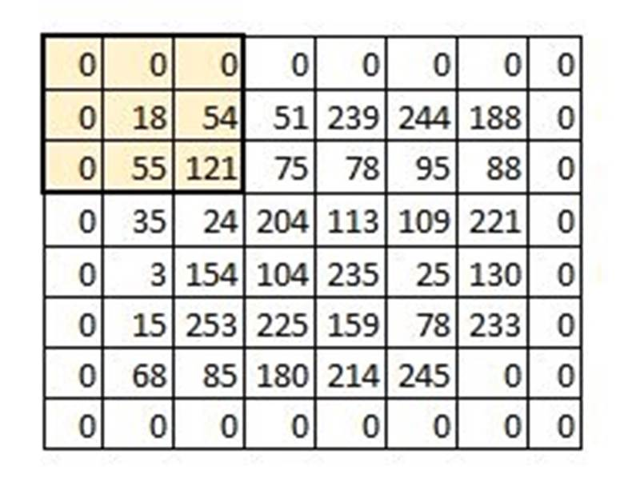
图6 补零示意图
如果规定输入图片的大小为，卷积核的尺寸为，步长为，填充圈数为。
那么经过卷积操作后的图像大小满足：
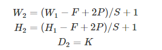
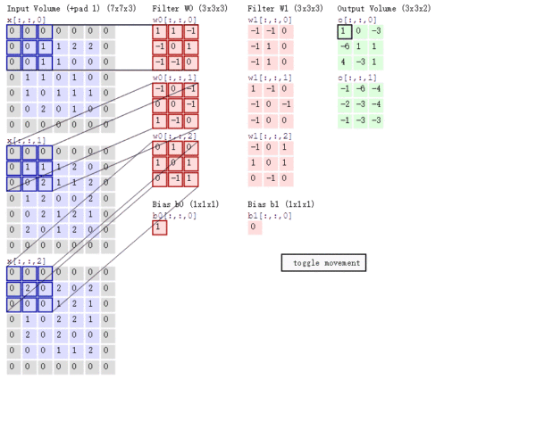
图7卷积示意图
举个例子，如图7所示，输入图片的大小为，卷积核的尺寸为 ，步长为2，填充圈数为1，没有设置激活函数，那么根据公式，输出图片的尺寸为。
然后来介绍一下池化操作，池化层是当前卷积神经网络中常用组件之一，它最早见于LeNet一文，称之为Subsample。自AlexNet之后采用Pooling命名。池化层是模仿人的视觉系统对数据进行降维，用更高层次的特征表示图像。
实施池化的目的：(1) 降低信息冗余；(2) 提升模型的尺度不变性、旋转不变性；(3) 防止过拟合。
池化层的常见操作包含最大值池化，均值池化等。
最大值池化
最大值池化是最常见、也是用的最多的池化操作。它的运算规则是将图像化成一个个的小区域，每一个区域内取最大值，通常区域的划分是，如图8所示。
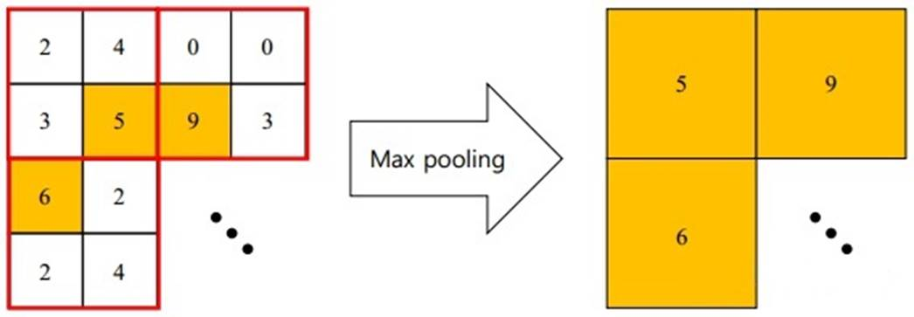
图8最大池化示意图
最大值池化的优点在于它能学习到图像的边缘和纹理结构。
均值池化
均值池化的运算规则也是将图像化成一个个的小区域，然后计算图像区域中的均值作为该区域池化后的值，如图9所示。
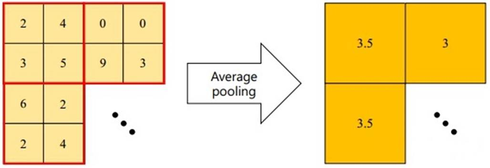
图9均值池化示意图
均值池化的优点在于可以减小估计均值的偏移，提升模型的鲁棒性。
最后来介绍一下flatten操作。flatten是用来对数组进行展平操作的，首先我们假设有一张灰度图片，这个图片只有3x3个像素点，分别是从1到9，我们对其进行flatten操作。首先它会把每一行进行分开，然后用下一行接在前一行的后面，形成一个新的数组1，2，3，4，5，6，7，8，9。如图10所示：
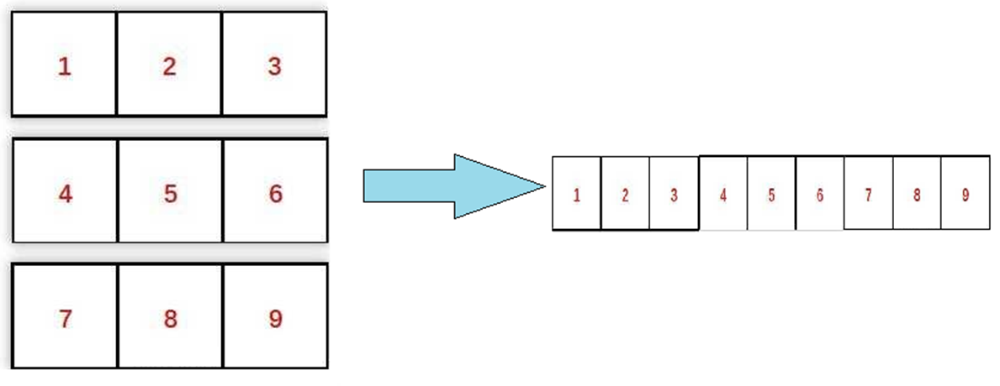
图10 flatten示意图
展平的好处是可以将数据变成一维的，从而便于后续进行神经网络的运算。
一个卷积神经网络模型一般都需要经过卷积层，池化层和展平层的运算，如图11所示：
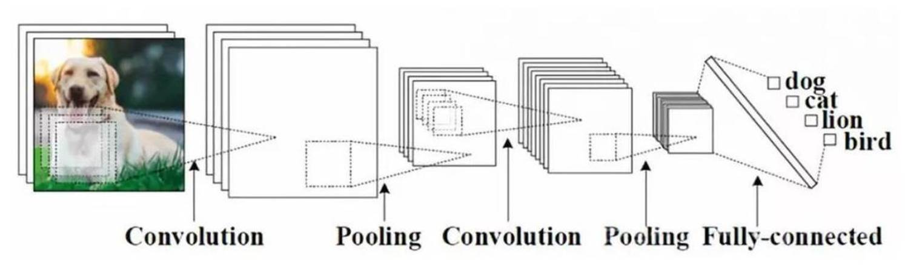
图11 卷积神经网络模型
参考文章：图像的处理原理：CNN（卷积神经网络）的实现过程
| 人人都是产品经理 (woshipm.com)
CNN基础知识——卷积（Convolution）、填充（Padding）、步长(Stride)
- 知乎 (zhihu.com)